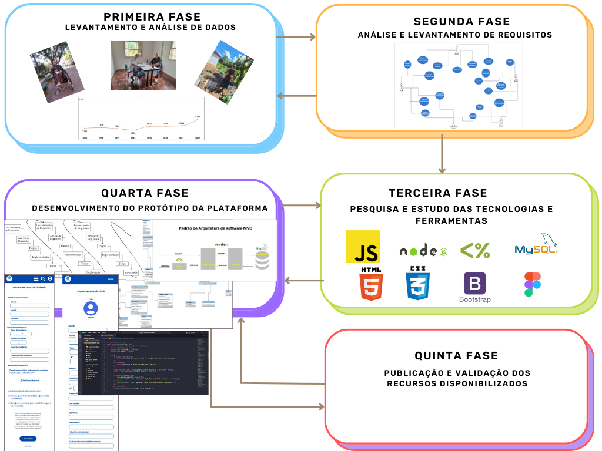

Redefinindo Jornadas
Uma rede social solidária para a reintegração de pessoas em situação de rua
🌱 Sobre o Projeto
Redefinindo Jornadas é uma proposta de rede social solidária voltada ao acolhimento e apoio da população em situação de rua. O projeto nasceu do desejo de unir tecnologia, empatia e ação social para transformar realidades invisibilizadas, promovendo conexões entre pessoas em situação de vulnerabilidade e redes de apoio — como ONGs, voluntários, serviços públicos e cidadãos solidários.
Embora a inclusão digital seja uma parte importante da iniciativa, o principal propósito do Redefinindo Jornadas é fortalecer o acesso efetivo às políticas públicas — fazendo com que os direitos fundamentais cheguem, de fato, a quem precisa. A plataforma funciona como ponte entre a população em situação de rua e os serviços de assistência, saúde, moradia e oportunidades, atuando como um instrumento de triagem, escuta e encaminhamento humanizado.
Mais do que um aplicativo, o Redefinindo Jornadas é uma semente de transformação social. Ele busca romper com a lógica excludente que cerca a vivência nas ruas, oferecendo um espaço digital acessível, seguro e acolhedor.
Idealizado com base em princípios de justiça social, participação cidadã e sustentabilidade, o projeto está alinhado aos Objetivos de Desenvolvimento Sustentável da ONU, contribuindo para a erradicação da pobreza, a redução das desigualdades e a construção de uma sociedade mais humana e inclusiva.
📍 Contexto e Justificativa
O Brasil vive uma crise social silenciosa, mas alarmante: a população em situação de rua cresceu 211% entre 2012 e 2022. Até o final de 2024, já eram mais de 327 mil pessoas vivendo nas ruas, em sua maioria sem acesso a moradia, renda, saúde ou qualquer suporte básico.
Este cenário é reflexo direto de um sistema desigual, agravado pelo desemprego, pela falta de políticas públicas eficazes e pelo enfraquecimento dos vínculos sociais. Pessoas em situação de rua enfrentam não apenas a precariedade, mas também o estigma, a violência e a exclusão cotidiana.
🚨 Números que não podem ser ignorados:
- 📈 +211% de crescimento em 10 anos
- 🏚️ +327 mil pessoas em situação de rua no Brasil (2024)
- 📉 Acesso limitado a serviços públicos essenciais
- 🤝 Redes de apoio fragilizadas e pouco integradas
O Redefinindo Jornadas nasce como uma resposta ativa a esse contexto. A proposta é promissora e urgente: usar a tecnologia para tornar visíveis essas vidas, reconectando-as a políticas públicas, serviços e oportunidades que já existem — mas não chegam até elas.
Funcionalidades
🙍♀️ Pessoas em Situação de Rua (PSR)
- Consultar Serviços: Acesso rápido a informações sobre alimentação, abrigo, saúde, entre outros.
- Solicitar Atendimento: Solicitação direta de serviços de forma simplificada.
- Acessar Oportunidades: Visualização de vagas de emprego, cursos e ações sociais.
- Compartilhar Experiências: Espaço para relatos pessoais, fortalecendo a escuta ativa e o acolhimento.
- Denunciar Violações: Canal seguro para denunciar situações de violência ou negligência.
🏛️ Instituições Públicas (IPSP)
- Gerenciar Cadastros: Cadastro e triagem de pessoas em situação de rua.
- Encaminhar para Serviços: Direcionamento personalizado conforme a necessidade da PSR.
- Gerenciar Recursos: Organização e uso eficiente dos recursos públicos.
- Captar Recursos: Estratégias de arrecadação, incluindo QR Code para doações.
- Monitorar e Avaliar: Acompanhamento do impacto das ações e ajustes contínuos.
🤝 ONGs e Organizações Parceiras
- Registrar e Acompanhar PSR: Manutenção de cadastros e histórico de atendimento.
- Encaminhar para Serviços: Apoio no acesso a atendimentos especializados.
- Oferecer Atendimentos: Inserção de cursos, abrigos, internações e atendimentos voluntários.
🙌 Voluntários e Parceiros (PF/PJ)
- Oferecer Apoio: Contribuição com serviços, produtos, oportunidades e acolhimento.
- Visualizar Demandas: Consulta de serviços e necessidades abertas.
- Realizar Denúncias: Notificações de casos de violação aos direitos das PSR.
🛠️ Administradores da Plataforma
- Gerenciar a Rede: Organização de fluxos e usuários do sistema.
- Verificar Conformidade: Validação de instituições e parceiros cadastrados.
- Suporte Técnico: Atendimento a dúvidas, problemas e melhorias.
- Monitorar Atividades: Acompanhamento de ações e movimentações na rede.
- Gerenciar Conteúdo: Moderação e atualização das informações da plataforma.
🧭 Metodologia
O Redefinindo Jornadas segue uma metodologia estruturada em cinco fases interdependentes, que orientam desde o diagnóstico inicial até a aplicação prática da rede social solidária. Cada etapa foi cuidadosamente pensada para garantir que as soluções propostas estejam alinhadas às reais necessidades das pessoas em situação de rua e das instituições envolvidas.
📊 Resultados e Impacto
A pesquisa revelou dados preocupantes: o número de pessoas em situação de rua no Brasil aumentou drasticamente nos últimos anos, reforçando a urgência de novas estratégias de enfrentamento. Foi identificado que a maioria dessas pessoas vive em condição de extrema pobreza, enfrentando também desafios relacionados à saúde mental, dependência química e à invisibilidade social.
Os resultados confirmam que o estigma, a burocracia e a fragmentação dos serviços públicos são barreiras reais para o acesso aos direitos mais básicos. Em contrapartida, ficou evidente o potencial de soluções tecnológicas para transformar esse cenário.
A proposta da rede social solidária mostrou-se promissora: ela conecta pessoas em situação de rua às oportunidades existentes, dá visibilidade às suas trajetórias e fortalece a articulação entre instituições públicas, ONGs, voluntários e sociedade civil.
Entrevistas de campo destacaram a importância de sistemas integrados de triagem, cadastro e acompanhamento para acelerar a reintegração social. A iniciativa ainda se alinha diretamente aos Objetivos de Desenvolvimento Sustentável (ODS), promovendo inclusão, redução das desigualdades e acesso à cidadania.
Mais do que uma ferramenta digital, o Redefinindo Jornadas tem se demonstrado como uma potencial estratégia de inovação social, para romper barreiras, humanizar o cuidado e mobilizar toda a sociedade por uma transformação real.
✨ Considerações Finais
O Redefinindo Jornadas não é apenas uma proposta tecnológica — é um chamado à ação coletiva. Os dados levantados durante a pesquisa confirmam a urgência de enfrentar o crescimento alarmante da população em situação de rua no Brasil e mostram que a ausência de políticas públicas eficazes não pode mais ser ignorada.
A plataforma solidária surge como uma ponte entre essas pessoas e os serviços que muitas vezes existem, mas não chegam até elas. Os resultados preliminares são animadores e reforçam a necessidade de inovação, empatia e articulação entre diferentes atores sociais.
Ainda em fase de desenvolvimento, o projeto segue sendo refinado com base em pesquisas de campo, entrevistas e colaborações estratégicas. A expectativa é concluir a etapa atual do projeto até o mês de julho de 2025, entregando uma solução concreta e impactante.
Mais do que promover inclusão digital da população em situação de rua, o objetivo maior é contribuir para que políticas públicas realmente funcionem e cheguem a quem mais precisa. O Redefinindo Jornadas se alinha aos Objetivos de Desenvolvimento Sustentável da ONU, reafirmando o compromisso com a justiça social, a dignidade humana e a reconstrução de vínculos.
📬 Contato e Informações
🌐 Redes Sociais
Acompanhe o projeto e ajude a espalhar a causa:
📚 Referências Bibliográficas
🤝 Parceiros e Colaboradores
Acreditamos que juntos podemos transformar vidas. Abaixo estão alguns dos nossos parceiros que compartilham essa jornada conosco:
💡 Se você deseja se tornar um parceiro e apoiar esta causa, entre em contato com a gente pelo e-mail.